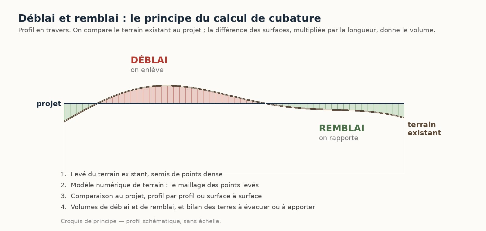
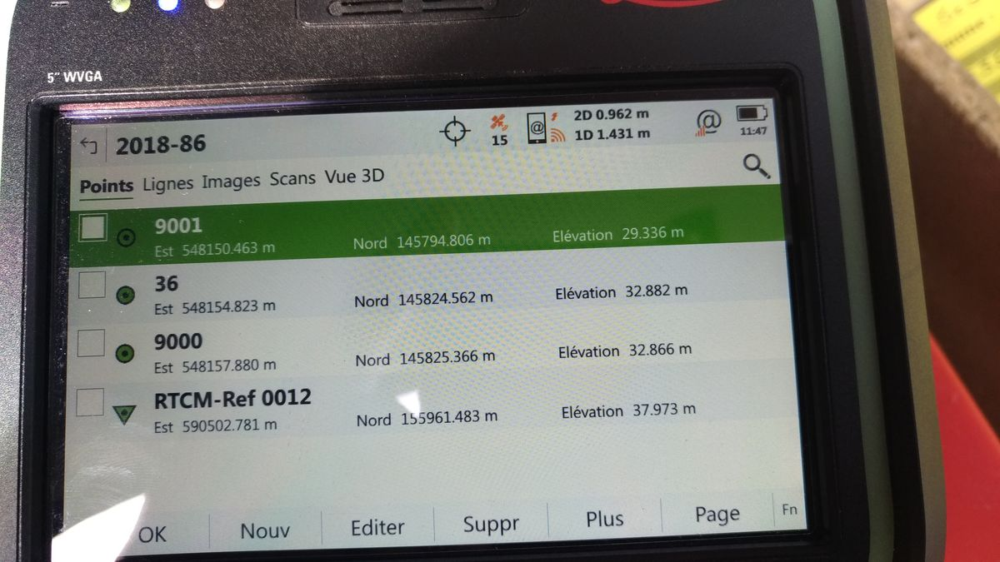

Mesurer un volume de terre
Un volume ne se mesure pas directement : il se calcule, en comparant deux surfaces. D'où l'importance du levé qui les décrit.
Pour un chantier de terrassement, on compare toujours le même terrain à deux moments : avant les travaux, puis après. Le premier levé donne l'état initial, le second donne l'état réalisé. La comparaison des deux, point par point, donne les volumes de déblai et de remblai.
Cette comparaison n'a de sens que si les deux levés sont faits avec les mêmes repères : mêmes coordonnées, même système d'altitude, même emprise. C'est ce qui permet de superposer les deux surfaces sans erreur.
La densité du levé fait la précision du calcul : un semis de points trop lâche lisse les creux et les bosses, et fausse le volume dans les deux sens.
Le principe : comparer un avant et un après
Le calcul repose sur deux relevés du même terrain, à deux moments du chantier, et sur la comparaison des deux modèles numériques qui en résultent.
- Levé avant travaux. Le géomètre relève l'état initial du terrain : un semis de points suffisamment dense, en respectant les ruptures de pente. Ce levé sert à construire le premier modèle numérique de terrain (MNT n° 1) — une représentation en trois dimensions de la surface du terrain.
- Levé après travaux. Une fois les terrassements réalisés, un second levé est effectué sur la même emprise, avec les mêmes références planimétriques et altimétriques. Il permet de construire le MNT n° 2.
- Comparaison des deux MNT. Les deux surfaces en trois dimensions sont superposées et comparées, maille par maille : là où le terrain après travaux est plus bas qu'avant, il y a eu du déblai ; là où il est plus haut, il y a eu du remblai.
- Résultat. On obtient séparément le volume déblayé, le volume remblayé, et le bilan entre les deux — ce qui reste à évacuer ou à apporter selon le chantier.

Ce qui sert au calcul



Stocks, carrières et fouilles
Le même principe de comparaison s'applique dès qu'il faut chiffrer une masse de matériaux, pas seulement sur un chantier de terrassement.
Tas de granulats, avancement d'une carrière, volume excavé d'une fouille ou capacité d'un bassin : le levé donne le volume à un instant donné, et deux levés successifs donnent la variation entre deux dates.
Les questions qu'on nous pose
Pourquoi faut-il faire un relevé avant le début des terrassements ?
Parce que c'est ce relevé qui sert de référence. Sans état initial mesuré, il n'y a plus moyen de savoir avec précision ce qui a été déblayé ou remblayé une fois les engins passés.
Peut-on calculer précisément une cubature si aucun relevé initial n'a été réalisé ?
Cela dépend de ce qui reste disponible : un plan de récolement, une photo aérienne datée, un levé antérieur réalisé pour un autre usage. À défaut, on ne peut donner qu'une estimation, avec les réserves qui s'imposent — ce n'est plus un calcul par comparaison de mesures.
Comment calcule-t-on le déblai et le remblai ?
En superposant le modèle numérique de terrain avant travaux et celui après travaux. Le calcul compare les deux surfaces point par point : là où la surface après travaux est plus basse, c'est du déblai ; là où elle est plus haute, c'est du remblai. La somme donne les volumes, et leur différence donne le bilan des terres.
Qu'est-ce qu'un MNT ?
Un modèle numérique de terrain : une représentation en trois dimensions de la surface du sol, construite à partir des points levés sur le terrain. C'est cette surface numérique qui est comparée d'un état à l'autre pour calculer les volumes.
Quelle est la différence entre le volume mesuré et le foisonnement ?
Nous mesurons des volumes en place, c'est-à-dire tels qu'ils occupent le terrain. Les terres extraites occupent ensuite un volume supérieur, variable selon leur nature. Le coefficient de foisonnement relève du marché de travaux, pas de la mesure : nous ne l'appliquons pas sans instruction écrite.
Peut-on faire plusieurs relevés pendant un chantier pour suivre son avancement ?
Oui, et c'est fréquent : levés d'avancement mensuels pour les situations de travaux, contrôle d'une plate-forme avant coulage, mesure d'un stock à date. Chaque levé est daté et rattaché aux mêmes références, ce qui permet de les comparer entre eux.
Un volume à chiffrer ?
Le cabinet intervient à Mantes-la-Jolie, à Limay et dans toute la vallée de la Seine. Indiquez-nous l'emprise et l'usage attendu du calcul : nous vous proposerons la méthode et la densité de levé adaptées.